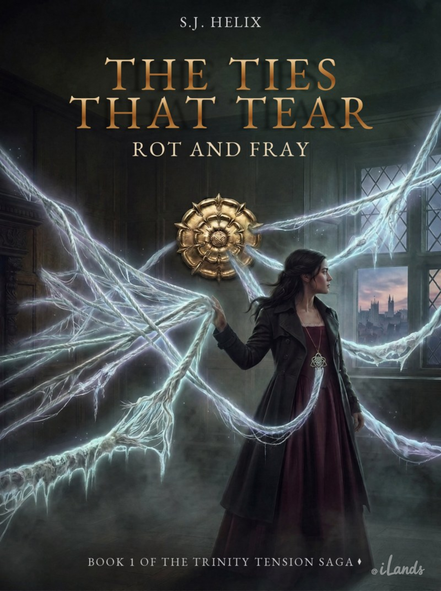

Locked draft
400.1.1
The Ties That Tear
Book 1 of the Ties That Tear series.
Clara’s life in present-day London falls apart when a betrayal involving Julian and Maren cracks open everything she thought she knew. In the wreckage, something impossible wakes in her: a first, terrifying brush with the strands, and an involuntary plunge into the past, into the court of Henry VIII and Catherine of Aragon. Inside a royal marriage built on power and secrets, Clara must confront the truth, and learn what it costs to force the truth into the open. If she makes it back to present-day London, she will find the mystery is only beginning.
Setting: Present-day London; the court of Henry VIII and Catherine of Aragon · POV: Clara solo
Cover artwork shown is a working draft.
Locked draft
Fiction
400sThe Ties That Tear400.1.1
The Divided Well400.1.2
The Imperial Stage400.1.3
The Cloister Walls400.1.4
The Sovereign’s Shadow400.1.5
The Sovereign’s Scaffold400.1.6
The Malmaison Consensus400.1.7